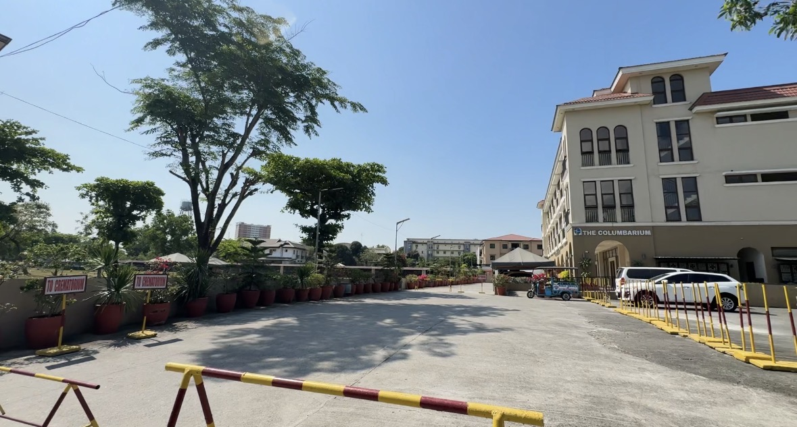

Our History
Rooted in Legacy
The Beginning
TAPAT Park Developers, Inc. was formally organized, registered with the SEC, and began commercial operations as Garden of Memories Memorial Park. Drawn by the vision of Engr. Tomas Sanchez, Jr., the project was backed by prominent investors from Taguig and Pateros. Despite facing a major flood from two typhoons in its first year, the company's resolve was strengthened, leading to the decision to raise the entire park to a higher level.
A Landmark Rises
A new chapel-office building was constructed in the middle of the park, which turned out to be the country’s biggest at the time—another first for Garden of Memories.
Expanding Services
After fifteen years of success, the company ventured into pre-need services, establishing The Garden of Memories Memorial Life Plan Inc. to educate the public on the importance of planning for the inevitable.
A Union of Companies
The stockholders approved the merger of TAPAT Park Developers Inc. and Garden of Memories Life Plan Inc., creating the new entity: Garden of Memories Memorial Park and Life Plan Inc. (GMMPLPI). This led to the construction of what was lauded as the country’s most elegant memorial chapel and mortuary complex.
A Tradition of Caring
Celebrating its 25th anniversary, the company upheld its integrity by voluntarily surrendering its license to sell pre-need plans, protecting its name amidst industry-wide scandals.
Commitment to Excellence
Major renovations were undertaken to upgrade park facilities, including the construction of new comfort rooms, reinforcing the company's commitment to visitor convenience and safety.
Precious as Ruby
Celebrating its 40th Anniversary, GMMPCI embarked on the construction of a new Columbarium and Chapel Complex to meet the modern challenges of the community, continuing its legacy of innovation and service.

INCORPORATORS
TAPAT Park Developers, Inc. was registered with SEC on March 6, 1978.

TOMAS S. SANCHEZ JR.

FRANCISCO F. TANGCO

MARCELINO C. RAYOS DEL SOL

TRINIDAD C. RAYOS DEL SOL

ESTER T. STA ANA

PATROCINA C. MARIANO

NORA SALONGA

JOSE E. REYES

ROLANDO G. LUNA

RODELIO T. REYES